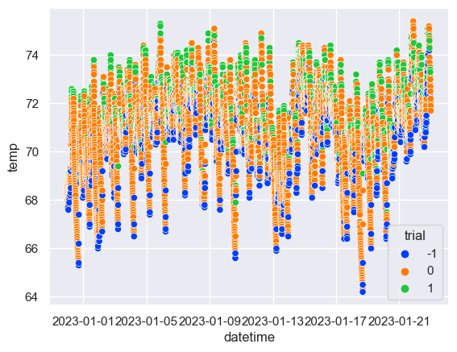
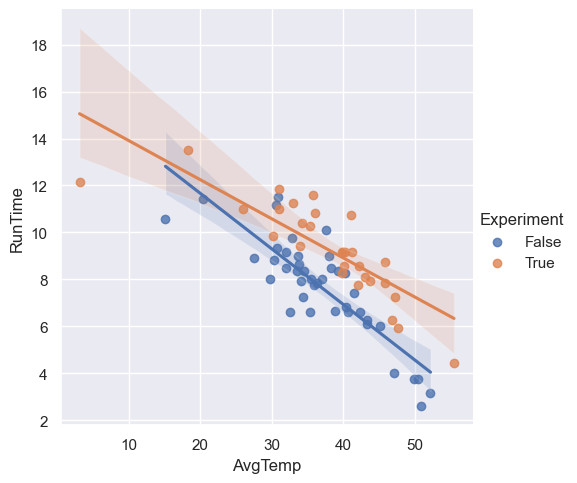

This will be a quick, snack-sized write up to dump something I did a few months ago onto this website. Nothing special here, I am just trying to build back up some sort of writing habit.
This past winter I found myself wondering if I should be heating my basement. The internet seemed to indicate that I probably should be. It turns out that it was better not to.
To clarify things a bit, when I say "heating," I really mean "heating over a minimum safe temperature," i.e. heating with a setpoint one might consider comfortable vs heating with a setpoint with the sole purpose of avoiding freeze-ups.At the time I decided to test this, I had the basement thermostat set to 59 deg F. On January 23rd, I increased the setpoint to 65 deg F.
The house is heated by an oil boiler feeding baseboard radiators. I don't have any digital read on the oil level or the consumptive habits of the boiler itself. However, I did have a device in the boiler room which takes temperature readings.
The nature of the bang-bang thermostat control is such that temperature is allowed to fall until it dips below the setpoint, at which point the boiler runs until the temperature rises above the setpoint, at which points the boiler stops. So what we observe is that the temperature falls, reaches a minimum, then rises, reaches a maximum, then falls again, and so on.
This pattern can be exploited to estimate the boiler run time. I chose to compute the second derivative of the temperature, which I then smoothed via a moving average with a window size of 4 intervals (the temperature data was 5-min interval data, so this was a 20-min window).
Picking some epsilon (I chose 0.1 by vibe) we then construct a series that is 1 if the numerical second derivative is less than -epsilon, -1 if the numerical second derivative is greater than epsilon, and 0 otherwise.
Moving through this series, we switch to or maintain the state "on" when we encounter a 1, switch to or maintain the state "off" when we encounter a -1, and simply keep the last state if we encounter a 0.
The total count of all intervals in the "on" state then represents a proxy for the total daily runtime of the boiler (Where 5 times the count gives an estimate of the number of minutes). We can plot the daily runtime against the daily average temperature and get an idea of how the different heating policies stack up against different environmental conditions.
Here are some summary statistics. Other than the count (which is the number of days for each test condition), you're looking at runtime statistics in hours.
Given that I found articles stating that running a warmer finished basement will help you heat the rest of your home more efficiently, I was surprised to find that the boiler was on for ~1.6 hours longer, on average, per day, when the setpoint was 6 degrees higher.
To be fair, it does appear, visually, that the warm basement policy might outperform when things get really cold.
What's the lesson here? I'm not sure. Probably the online sources are mostly right for most homes, and some combination of my home's geometry, layout, heating system, or build materials make this not the case. The real question is: is this indicative of a need to insulate or do some other upgrade? I don't know enough to know! In any case, I'll be maintaining the minimum viable setpoint until I do know.